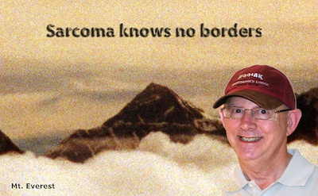

by Stephen Z. Fadem, M.D., FACP, FASN
I had osteosarcoma starting in 1997, and have been in remission since 1999. Here is my story:
It all started in the summer of 1997, when a small lump on my right thigh would not go away. It not only persisted, but enlarged. Although I never dreamed it was anything but a benign cyst, an MRI scan on the last day of December, 1997 was interpreted differently – a soft tissue sarcoma. Over the long weekend I poured through the medical literature looking for a great surgeon. I found one in New York, but fortuitously, he had recently relocated at MD Anderson Hospital in Houston. I called him, and he reviewed my MRI Monday morning prior to his first case. I was on the schedule for the following day. A 4 to 5 cm soft tissue sarcoma was resected with clean margins – interpreted to be osteosarcoma – and I was considered "lucky" to have it in the path jar. 6 months later I was glaring at an x-ray that I could not believe was mine.
I once wrote "There is no life experience that can prepare one completely for the words from a physician like 'you have renal failure and will need dialysis' or 'you have cancer and it is metastatic.'" For years, as I told patients dialysis would be needed, I silently admired them because I did not think that I could ever endure hearing those or similarly fateful words.
But, on the first of July, 1998, a routine chest x-ray revealed metastatic lesions in my lungs. I was at the x-ray boxes and saw this horrible film. My first reaction was "poor guy." But, when I looked at the name in the corner, it was me!! It is amazing how rapidly we accept bad news and how we regroup to develop a strategy to cope with and overcome it.
The first thing I did was become disoriented. I actually got lost in the radiology department where I did my internship. But, after getting a grip I grasped the resolve to fight this dragon.
How I chose to fight it was drawn from the insights of dealing with brave and tenacious patients. My offices were two streets away from the place I trained and where I would become a patient – The MD Anderson Cancer Center. My first stop – the Internet, mainly the National Library of Medicine's PubMed. Here I reviewed every article ever written about sarcoma. The more I read, the more confused and depressed I became. Next, I found ACOR – the Association of Cancer Online Resources, Inc – an online support group that is divided into sections related to the various types of cancer or sarcoma. My SARCOMA e-mail group was made up of a close knit group of supporters. I had never seen nor had the pleasure of smiling at or hugging one of them in person, but on the web they were my special extended family. Not only fellow patients that have been through what I am going through, but scared newcomers and old weather-beaten soldiers who have fought the dragon of metastasis many times, and served as an example. He or she can do it, I can do it, you can too. Support, prayers and information are at the heart of these groups, and there is one for each disease. This support group proved to be bittersweet. Many of the early supporters succumbed to their disease. I have made lasting relationships through this group, however, and will never forget the positive impact it had on my life.
My greatest source of knowledge was my would-be physician, Bob Benjamin. He oozed optimism and transfecting me with it was the principle factor in helping me cope with the emotional roller coaster that was to follow. By the fourth of July, 1998 I had a central intravenous line in place and embarked on the first of eight courses of chemotherapy. Adriamycin is one the most powerful chemotherapeutic agents ever developed and ifosfamide is derived from mustard gas, used in chemical warfare during World War I. It was developed by the same German scientist who won the Nobel prize for discovering how to make ammonia, a main component in military explosives. How appropriate: This was a war against sarcoma.
That year was the most turbulent in my life. With the discovery of metastatic lung disease, I officially entered the realm of the chronically ill patient. The discovery of any chronic medical problem, be it cancer (or in my case sarcoma), kidney failure, or some other disease entity deals an entirely new hand - a new set of circumstances; opportunities for success or failure are now measured in terms of survival. Here, the stakes are higher and the burdens greater.
My therapy was interrupted in September by a midline sternotomy. In this type of surgery, the lung is approached through the sternum. I tolerated all of this well, with the explicit hopes that if the tumor was not eradicated by chemotherapy, it would be removed with surgery.
Afterward, starting in January, I underwent follow-up chest CT scans. It appeared as if a lesion was progressively "growing" in my left lung. Was it tumor? Was it scar? Without surgery there was no way to know - and the risks were too great to leave a resistant tumor behind. As I emotionally bounced from CT scan to scan, I maintained my endurance through attempts to rationalize that tumor growth would be possible, but unlikely this soon after chemotherapy. Luckily, confidence is contagious, and my oncologist had a severe case of it.
During my chemo days I became known to friends and colleagues as "Dr. Cueball." But, my hair grew back a silvery gray, only to start falling out again because of male pattern baldness. The chemo neuropathy makes it challenging to open soda cans, but since we teach that soda is not healthy, that was not as great a problem as buttoning my shirt.
Finally, the day of reckoning came. In June, 1999, I underwent another lung operation, a thoracotomy - this one through my back. The surgery was uneventful, and the results were confirming - the tumor was dead. I was at long last in remission.
Yearly CT scans have confirmed that the tumor is dead. For the month preceding each scan I morphed into a nut-case – and struggled to shroud my anxiety from my family, patients, colleagues and teammates. To my pleasant surprise 11 years later, I passed an insurance physical!!
The experience of undergoing a metastatic, chronic disease has completely changed my perspective. It was much more difficult to be a patient than to ever be a doctor. The truth is that being a patient is very, very challenging. I truly respect those who can prevail over a demanding illness like cancer, sarcoma or kidney failure. During the time I was sick I gleaned an ever-increasing amount of respect for my own patients, and the oncology patients that I met through the Internet or at MD Anderson Cancer Center. And, as exemplified by what my wife and children endured, I have gained infinite empathy for the families devoted to a sick loved one. The lessons that I learned through being a patient make me a more caring, complete and understanding physician.
As we go through our lives, we often get into a cycle of work-sleep-work-sleep. We rush through traffic to our jobs then back home. Now, it is worse - e-mails that must be answered, paperwork that must be completed and a variety of senseless time thiefs create a sense of urgency and stress as they encroach upon the time we have left to actually spend at our jobs. Meanwhile, our workdays get longer, and we spend less and less time with our friends and family.

As we lose our hair and our kids grow up we suddenly realize that life is not endless. But, by then we have often forgotten how to live. Only when a close friend or loved one dies do we ever think about the possibility we may also die. But all too soon this wears off again - work-sleep-work-sleep. Winston Churchill once said, "Men occasionally stumble over the truth, but most of them pick themselves up and hurry off as if nothing had happened." As tragic and horrible as it is to have a bad type of cancer, there is some good in that it serves as a reminder that every day is precious. We should accelerate the parts of life that are enjoyable. We should think about all the wonderful and fun things that we were going to do during retirement, and do them now. We should try to carve out time to get away. It is important to capture in our minds every joyous moment we have. Maybe that is why one of the first things I did when I could travel again was to purchase a nice camera and have become an avid photographer.
Whether or not you are young or old, a dialysis patient, a cancer patients or a friend from the web, find what you enjoy the most and do it now. Do not wait to retire. Patients - There are wheelchair ramps and dialysis machines on most cruise lines. Your history and physical is a keystroke away from a doctor in Paris, London, or Bangkok. You can get excellent dialysis care in Kathmandu, Hong Kong or Singapore. It is well worth it to have that future trip in mind when you are sitting in the dialysis or chemotherapy chair for four hours.
© 2010 Stephen Z. Fadem, MD. All rights reserved. No part of this article can be used without permission.